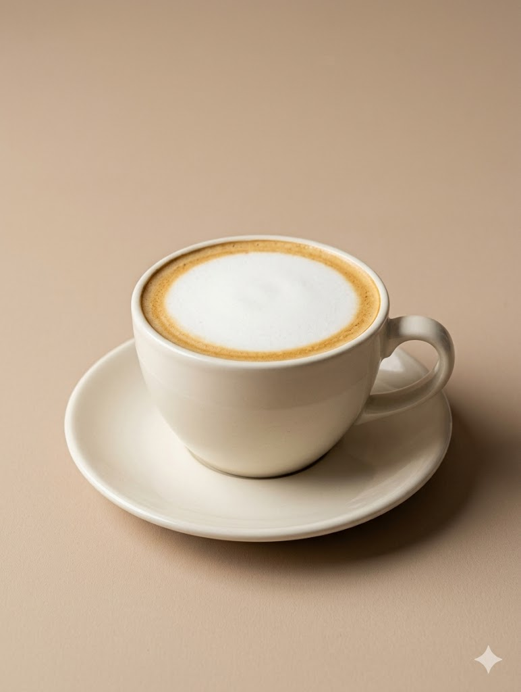
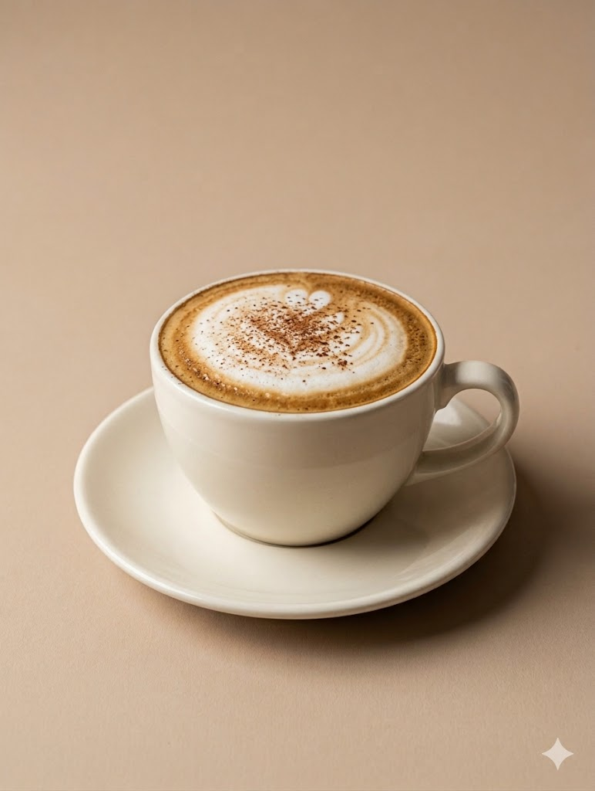
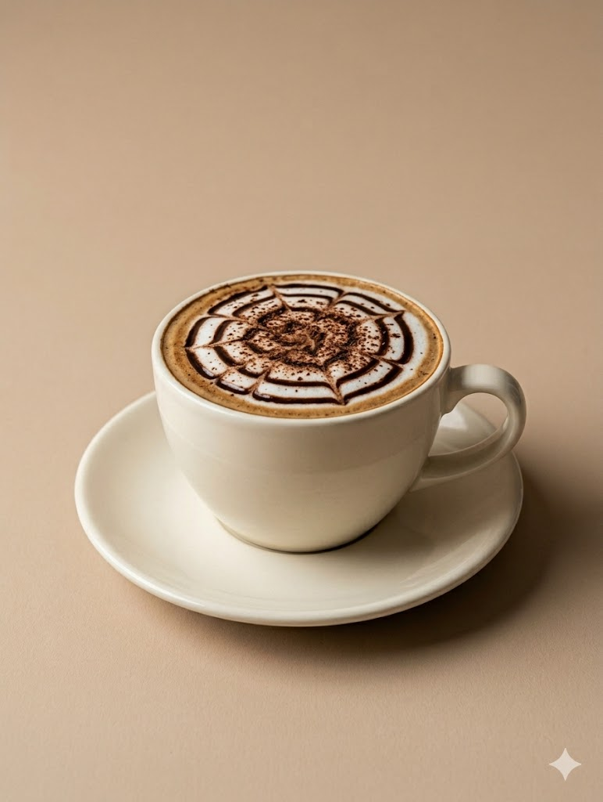
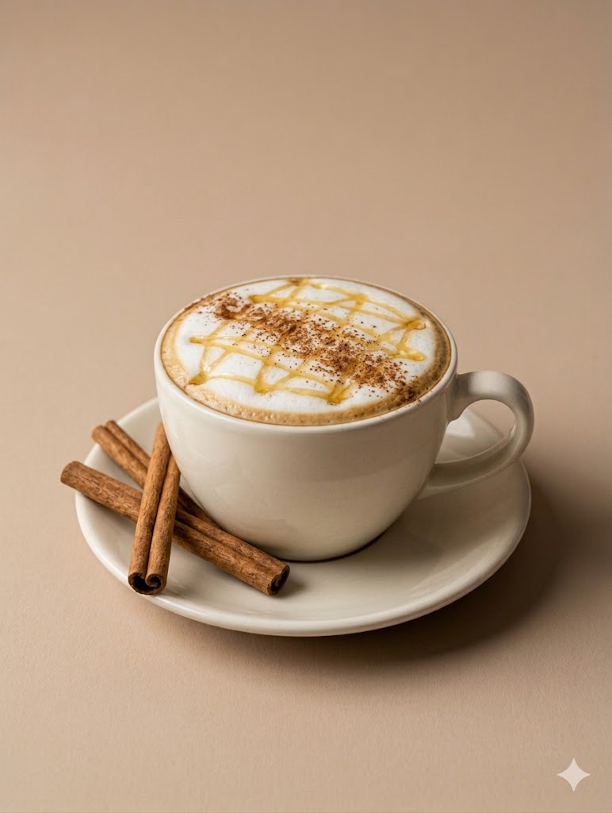

HOT COFFEE RECIPES

Classic Hot Latte
Ingredients
- Double shot espresso
- 1 cup warm milk
Directions
Heat your milk and pour it into a mug. Add sugar if desired and stir until dissolved. Brew a double shot of espresso directly over the warm milk, then gently stir everything together before serving.

Cappuccino
Ingredients
- Double shot espresso
- Steamed milk
- Foamed milk
Directions
Heat your milk and pour it into a mug. Add sugar if desired and stir until dissolved. Brew a double shot of espresso directly over the warm milk, then add on your foamed milk and decorate to your liking.

Hot Mocha
Ingredients
- Double shot shot espresso
- 1 cup warm milk
- Chocolate syrup
Directions
Add chocolate syrup into a mug and brew a double shot of espresso over it. Stir until smooth. Pour warm milk into the mug and stir gently before drinking.

Honey Cinnamon Latte
Ingredients
- Double shot espresso
- 1 tablespoon honey
- Cinnamon
- 1 cup warm milk
Directions
Add honey and a sprinkle of cinnamon into a mug. Brew a double shot of espresso over it and stir until combined. Pour warm milk into the mug and mix gently before serving.